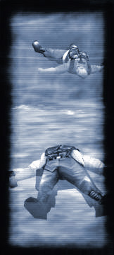

<html>

<head>

<style>

.header:link { color: #FFFFFF; text-decoration: none }
.header:visited { color: #FFFFFF; text-decoration: none }
.header:hover { color: #FFFFFF; text-decoration: underline }

.mainheader:link { color: #FFFFFF; font-size: 15px; text-decoration: none }
.mainheader:visited { color: #FFFFFF; font-size: 15px; text-decoration: none }
.mainheader:hover { color: #FFFFFF; font-size: 15px; text-decoration: underline }

	a:link { color:#708498; font-size: 12px; text-decoration: none }
	a:visited { color: #708498; font-size: 12px; text-decoration: none}
	a:hover { color: #FFFFFF; font-size: 12px; text-decoration: none}
</style>

<title>Sven Co-op 3.0 Manual</title>
</head>

<body bgcolor="#000000" topmargin="4" leftmargin="0" rightmargin="0" bottommargin="0" marginwidth="0" marginheight="0">

<div align="center">
  <center>
  <table border="0" width="93%">
    <tr>
      <td width="80%" valign="top">


<table border="0" width="100%" cellspacing="0" cellpadding="0">
  <tr>
    <td>


<table border="0" cellspacing="0" cellpadding="0">
<tbody>
<tr><td><font face="Verdana"><a href="http://www.svencoop.com/" target="_blank">
  </a></font></td><td><p align="center"><font face="Verdana" size="4"><b><font color="#FFFFFF">Sven
    Co-op </font><font color="#708498">Version </font></b><font color="#708498"><b>
  3.0</b></font></font><b><font color="#708498" face="Verdana" size="4"><br></font></b>
  <font color="#AFBAC9" face="Tahoma, Arial" size="2">Pleasing
    Taste, Some Monsterism</font></td></tr>
</tbody>
</table></td>
    <td>
      <p align="right"></td>
  </tr>
</table>
<table border="0" width="100%">
  <tr>
    <td width="100%"><p style="font-size: 4px;">&nbsp;</p></td>
  </tr>
</table>
<table border="0" width="100%" bgcolor="#708498" cellpadding="2" cellspacing="1">
<tbody>

               
<tr><td width="100%" bgcolor="#000000"><b><font color="#FFFFFF" face="Verdana"><p style="font-size: 15px;">&nbsp;Features/Changes 
  List</font></p></b></td></tr>
</tbody>
</table>
<div align="center">
  <center>
  <table border="0">
    <tr>
	<td>
<br>
<font size="2" face="Tahoma, Arial"><font color="#AFBAC9"> 
For full credits, check the relevant text files in the maps\ folder, models\ 
folder, etc.</font><blockquote>

<h3>
        <b>
        <font face="Verdana" color="#FFFFFF">New in Sven Co-op v3.0:</font></b></h3>

</blockquote>
            </font>
<font face="Arial" color="#FFFFFF">

<p><i>Map Changes</i></font><font size="2" face="Tahoma, Arial"><ul style="color: #AFBAC9" type="circle">
  <li><font color="#AFBAC9">New map series: Afrika Korps by MysticMDT</font></li>
  <li><font color="#AFBAC9">New map: Another Unit by B-dama</font></li>
  <li><font color="#AFBAC9">New map: Auspices by Seraph</font></li>
  <li><font color="#AFBAC9">New map: Extended Resistance by DAN200</font></li>
  <li><font color="#AFBAC9">New map: Greysnake by Trempler</font></li>
  <li>New map: Rampage by Rugal</li>
  <li>New map: Sandstone by tdw</li>
  <li><font color="#AFBAC9">New map: VGer by VGer3781</font></li>
  <li><font color="#AFBAC9">New map: Zero by TheRealGame</font></li>
  <li>Updated map<font color="#AFBAC9"> series</font>: ToonRun by Koelzk</li>
  <li>Updated map: Extension</li>
  <li>Updated map: Osprey</li>
  <li>Updated map: Stadium3 (Steam only)</li>
  <li>Tweaked maps:  GargFoot, Grunts2, Hostage, Svencoop1&amp;2</li>
</ul>
            </font>

<p><font face="Arial" color="#FFFFFF"><i>Misc Changes</i></font></p>

<font size="2" face="Tahoma, Arial">

<ul style="color: #AFBAC9" type="circle">
  <li>Full Steam support</li>
  <li>Updated player models, with new animations for drawing weapons, reloading, 
  throwing grenades, etc.</li>
  <li>Much greater sound variety when playing in Steam (more monster sounds, NPC 
  speech, etc.)</li>
  <li>Optional high-definition models for some monsters, by HIT</li>
  <li>Menu background music by <font size="2" color="#AFBAC9">Ilkka &quot;</font><a href="mailto:gloomz@hotmail.com">Gluem</a><font size="2" color="#AFBAC9">&quot; Richt</font></li>
  <li>Updated support for Valve's HL single-player maps by
  <a target="_blank" href="mailto:jasonleyva@hotmail.com">Guardian</a> (for information on 
  playing the HL SP maps in Steam, <b>
  <a target="_blank" href="http://www.svencoop.com/spm.php">CLICK HERE</a></b>)</li>
  <li>Crosshairs updated for greater visibility</li>
  <li>Improved cockroach</li>
</ul>

</font>
<font face="Arial" color="#FFFFFF"><i>Major Features</i></font><font size="2" face="Tahoma, Arial"><ul style="color: #AFBAC9" type="circle">
<li>Mod updated to work with Steam</li>
<li>New monsters: Opposing Force Grunts added, including Torch (explodes when fuel canister is damaged), Medic (heals 
his allies, whether they're players, grunts or aliens), SAW, and Normal grunt types. Friendly and Hostile versions of each type are available</li>
<li>New monster: Voltigore</li>
<li>New monster: Baby Voltigore</li>
<li>New monster: Cleansuit Scientist - Identical to the Opposing Force version except immune to Poison, Chemical, Radiation, Nerve Gas, and Drowning types of damage</li>
<li>New monster: Black Ops Osprey Helicopter</li>
<li>New monster: Black Ops Apache (for Op4 compatibility)</li>
<li>New monster: monster_hwgrunt_repel - Heavy Weapons Grunt that rappels down. After landing, he'll be able to use his minigun</li>
<li>New weapon: M134 Minigun</li>
<li>New weapon: M40A1 Sniper Rifle. Inaccurate when un-zoomed</li>
<li>New weapon: Barnacle Grapple. Alternate fire toggles pull/rappel mode. Attaches to all monsters, or only some, depending on the map</li>
<li>Shock Trooper Spore Grenades added</li>
<li>Updated Heavy Weapons Grunt</li>
<li>Monsters can randomly roam a level that has info_nodes (must be enabled by the map creator)</li>
<li>All friendly monsters can be made to follow players with the +USE key</li>
<li>New commands for friendly monsters: 
  
<ul style="color: #AFBAC9" type="square">
<li>npc_return (immediately return to the player)
  </li>
<li type="square">npc_findcover (stop and find cover from the enemy)
  </li>
<li>npc_attackmytarget (target under the player's crosshairs becomes the new enemy)</li>
</ul>

</li>
<li>New command: "dropammo" / "dropammo weapon_name_here". Drop weapon's maximum ammo clip, or half of the weapon's current ammo (whichever is less)</li>
<li>New player model animations added for drawing weapons, weapon reloading and firing, etc.</li>
<li>New feature: Monster riding - Jumping onto a monster will allow you to "ride" it when it begins to move</li>
<li>New feature: Per-entity sound-replacement. Combined with model-replacement and other SC mapping features, this allows for (among other things) Monster Packs, whole new monsters that mappers can plug in to their maps</li>
<li>New feature: Global camera added (allows in-game cut scenes)</li>
<li>Updated Scoreboard with Voice Mute support</li>
<li>Blood effects are now client-side</li>
<li>HWGrunts and Sniper Male Assassins drop their weapons on death</li>
<li>New Osprey Features: 

<ul style="color: #AFBAC9" type="square">
<li>Grunt Type Selection - Can spawn Human Grunts (default) or Opposing Force 
Grunts </li>
<li>Player Ally Option - Can spawn Friendly/Evil Human Grunts/Opposing Force 
Grunts </li>
<li>Up to 6 [different] Ospreys may be in a level at the same time</li>
</ul>

</li>
<li>Ability for mappers to assign monsters to different factions (Example: Zombies and Assassins can be on the same team)</li>
<li>Fixed: Roaches can be squished again</li>
</ul>

</font>
<p><font face="Arial" color="#FFFFFF"><i>Physics Changes </i></font></p>
<font size="2" face="Tahoma, Arial">

<ul style="color: #AFBAC9" type="circle">
<li>Monsters are launched into the air by explosions on death (if not gibbed)</li>
<li>Monster corpses align to the ground on death</li>
<li>Monster corpses float in water</li>
<li>Ichthyosaurs float on death, and stay around for up to 15 seconds -- You can jump on them as life rafts </li>
<li>Monsters now take falling damage (monsters spawned in the air are immune until reaching the ground)</li>
<li>Players and monsters can now damage other creatures they happen to fall onto. E.g. If a gargantua lands on you, you're smooshed</li>
<li>Weapons are thrown further/higher based on your view angle when pressing the Drop key</li>
<li>When dropped, weapons will fall / bounce / react to the ground realistically</li>
<li>Weapons can be caught in the air by other players, or you can throw a weapon into the air and catch it yourself on the day down</li>
<li>Satchels can now be kicked by their owners</li>
<li>Grenades can now roll on the floor/down hills</li>
<li>Grenades launched from the MP5 now spin/fly in a realistic manner. Grenade launch position also updated to reflect view model</li>
<li>Dropped weapons can be thrown through teleports</li>
</ul>

</font>
<p><font face="Arial" color="#FFFFFF"><i>AI/Monster Changes </i></font></p>
<font size="2" face="Tahoma, Arial">

<ul style="color: #AFBAC9" type="circle">
<li>Intelligent monsters attempt to take control of player-controllable turrets in appropriate situations</li>
<li>Alien Slaves can revive their fellow species. Revived Alien Slaves have half 
of their original health points 

<ul style="color: #AFBAC9" type="square">
<li>NOTE: Above feature is based around Valve's original code (feature didn't 
make it into Half-Life), with graphical improvements and fixes</li>
</ul>

</li>
<li>Monsters can now jump from ledges. They attempt to check that the distance to the ground is not too great before doing so.</li>
<li>Certain monsters fear various types of creatures like zombies, gonomes, headcrabs, etc. and attempt to run away from them via node graph or non-node graph path finding methods</li>
<li>Added path smoothing for monsters</li>
<li>Drastically improved navigation for monsters with large hulls (e.g. Gargantuas) in regards to navigating up steep ramps/slopes</li>
<li>If monster is wounded and finds a medic grunt that's allied with it, it'll 
call him using an appropriate sound</li>
<li>Headcrabs will attempt to gang up on Bullsquids in a counter-attack, but will flee if being pursued by a Bullsquid. If cornered, headcrabs will attack the Bullsquid</li>
<li>Monsters will now decide to look in the direction their player/monster allies are shooting (if they're in an idle/alert state)</li>
<li>Vastly improved non-node_graph path finding. Monsters can triangulate around obstacles off of edges, in tight corridors, off of other entities, etc</li>
<li>Improved movement for monsters regarding dynamic entities blocking paths and their movement goal; monsters will tend to move without trouble in packs</li>
<li>Monsters are far better at using doors</li>
<li>Monsters now duck and cover from Rockets</li>
<li>After being injured, squad members will try to find and follow their leaders when not in combat</li>
<li>If squad monsters can find their squad leader, they slowly regenerate health 
while in idle status</li>
<li>Aliens gain a maximum of 100 health when devouring their fallen enemies</li>
<li>Fixed performance issues with Alien Controllers</li>
<li>Revamped Heavy Weapons Grunt AI. He can now run, target multiple targets without spinning down his minigun, etc. etc.</li>
<li>Animation blending added for HWGrunt. HWGrunt's minigun spins realistically</li>
<li>Heavy Weapons Grunts now talk with other squad mates</li>
<li>Grunts now intelligently decide whether or not to crouch/stand when attacking (Drastically reduces shooting through sandbag-effect, and helps them to attack better overall - positions aren't invalidated as a result)</li>
<li>Updated Grunt AI to better engage flying monsters</li>
<li>All Grunt types have modified behaviour toward Gargantuas. If a grunt is equipped with grenades or a grenade launcher, it will use that item against a Gargantua</li>
<li>Monsters now target an Osprey Helicopter at either one of its engines</li>
<li>Monsters will now attack enemy barnacles that have prey</li>
<li>Updated Ichthyosaur AI, monster is more lethal and goes into idle mode again after killing</li>
<li>Monsters can better engage their targets by attempting to run to the enemy's line of sight if they fail to find a path to their enemy</li>
<li>Pitdrones are now squad-based monsters</li>
<li>Added anti-friendly fire support for Pitdrones</li>
<li>Slightly increased damage resistance for Shocktroopers and decreased damage resistance for Pitdrones</li>
<li>Basic wall detection added for sentry turrets to keep them from falling into walls</li>
<li>Robo Grunts: Decreased damage taken from electricity and fire</li>
<li>Apache now checks to make sure firing a rocket will not endanger itself</li>
<li>Decreased accuracy of Sniper Male Assassins slightly</li>
<li>Male Assassin Snipers now stop running to their last position after reloading if they can attack</li>
<li>Fixed Sniper Male Assassin aiming coordinates</li>
<li>Fixed bug with monsters pausing for a few seconds after being spawned from monstermakers/squadmakers</li>
<li>Fixed poor enemy communication for monsters with squad members and squad leaders</li>
<li>Fixed issue with Sniping Male Assassins reloading if schedule failed</li>
<li>Fixed bug with newer talk monsters (Otis) not being able to have a use/un-use sentence from Worldcraft</li>
<li>Fixed TakeDamage issue with Male Assassins</li>
<li>Fixed problem with friendly Pitdrones attacking friendly Shock Roaches</li>
<li>Fixed bullet shell ejection point for human grunts, robot grunts, male assassins (Applies to new Opposing Force Grunts)</li>
<li>Fixed freeze bug with grunts after they dropped a grenade to run to cover</li>
<li>Fixed model replacement bug with collision boxes for the Ichthyosaur</li>
<li>Fixed NPC "Hello" actions</li>
<li>Fixed "fidget in place for a valid path" navigation glitch for when monsters update their route information when falling far behind, while the enemy isn't visible (phew)</li>
<li>Monsters pausing from a constant stream of damage fixed</li>
<li>Pause issue with monsters after running to a scripted_sequence fixed</li>
<li>Short game freeze for servers running maps with Babygargs fixed</li>
<li>Monsters now stop running/cowering from grenades that have exploded</li>
<li>Monsters that cower to take cover from grenades (e.g. Human Grunts) will stop cowering and flee if a new grenade is detected</li>
<li>Decreased danger-alert radius slightly for grenades</li>
<li>Prisoners no longer take cover from grenades</li>
<li>When doing victory dances, monsters no longer ignore grenades</li>
<li>Added non-node_graph grenade cover. Monsters no longer require a node graph to escape from grenades</li>
<li>Monsters no longer ignore grenades when reloading their weapon</li>
<li>Fixed Gargantua's collision box dimensions</li>
<li>Talk-Monsters (Otis, Barney, Scientists, Opposing Force Grunts) no longer ignore grenades when talking or listening to another NPC</li>
<li>Scientists now scream when they detect grenades</li>
<li>Fixed bug with friendly alien slaves inadvertently triggering nearby Barneys to attack players</li>
<li>Fixed bug with Otis not spawning with a random head from the monstermaker entity</li>
<li>Allowable distance for attacking increased for monsters that are engaging flying monsters</li>
<li>Squad based monsters will no longer take cover from new enemies on subsequent encounters</li>
<li>Fixed Alien Controller view origin</li>
<li>Fixed a series of issues with the Big Momma monster's special mapper-placed scripted paths</li>
<li>Monsters that are cut off by a door from a [starting] node for their path will attempt to open the door and proceed to the node</li>
<li>Fixed bug with scripted sequences not being able to finish if a monster was being attacked</li>
<li>Fixed problem with Houndeye Squad-Leaders freezing in place after playing their "leaderlook" animation</li>
<li>Fixed bug with monsters being able to attack their enemies after failing to run to an aiscripted_sequence (Note: They can still remember their enemies after finishing the script)</li>
<li>Fixed bug with Friendly Shocktroopers spawning Enemy Shockroaches</li>
<li>Fixed bug with friendly monsters talking to players when shot during their death sequence</li>
<li>Fixed bug that allowed monsters to die in scripted_sequences even if "No Interruptions" was checked in Worldcraft</li>
<li>Monsters that talk with others will now not respond to questions if in combat</li>
<li>Increased pitch for Pitdrone's spike hit sound to match Opposing Force's version</li>
<li>Monstermakers/Squadmakers now do not stop making monsters if their 'children' are killed while performing a scripted_sequence</li>
<li>Improved findlateralcover() for monsters</li>
<li>Silent monster_sentry bug fixed</li>
</ul>

</font>
<p><font face="Arial" color="#FFFFFF"><i>Mapping Changes</i></font></p>
<font size="2" face="Tahoma, Arial">

<ul style="color: #AFBAC9" type="circle">
<li>Global and per-entity sound replacement added</li>
<li>Free Roaming options: Default roaming on/of in worldspawn, and always/never/default roaming options for monsters/squadmakers.</li>
<li>New entity: trigger_random_unique</li>
<li>New entity: player_respawn_zone</li>
<li>New entity: env_spritetrain</li>
<li>New entity: env_fog</li>
<li>New entity: item_generic</li>
<li>New entity: ammo_762 (sniper rifle ammo)</li>
<li>New entity: ammo_556 (minigun ammo)</li>
<li>Mappers can now set a monster's hull size in Worldcraft/Hammer</li>
<li>New npckill setting: When set to "2", friendly npcs can be killed by anything but players</li>
<li>New Map CFG command: mp_respawndelay - Mappers can set how long players must wait before respawning, default '3' seconds</li>
<li>New Map CFG command: mp_grapple_mode:
  
<ul style="color: #AFBAC9" type="square">
<li>0 (default): Barnacle grapple attaches to players, xeno_grapple textures and pulls headcrab-sized monsters toward you.
  </li>
<li>1: Barnacle grapple works as in Opposing Force. It attaches to players, xeno_grapple textures, and pulls players towards all monsters (except headcrabs and below)</li>
</ul>

</li>
<li>New Map CFG command: mp_disable_player_rappel 1 - Barnacle grapple will not attach to players</li>
<li>New Map CFG command: mp_noblastgibs 1 - monsters will not gib from explosions in most cases</li>
<li>New Map CFG command: mp_no_akimbo_uzis 1 - disables gaining the akimbo Uzis on the second 
Uzi pickup in some cases</li>
<li>Ladders can be toggled on/off when triggered
  
<ul style="color: #AFBAC9" type="circle">
<li type="square">"Start OFF" flag added</li>
</ul>

</li>
<li>Blood color choices added for monsters</li>
<li>New Osprey Options:
  
<ul style="color: #AFBAC9" type="square">
<li>Grunt Type Selection - Can spawn Human Grunts (default) or Opposing Force Grunts
  </li>
<li>Player Ally Option - Can spawn Friendly/Evil Human Grunts/Opposing Force Grunts
</li>
<li>Up to 6 [different] Ospreys may be in a level at the same time</li>
</ul>

</li>
<li>Black Ops Osprey Options:
  
<ul style="color: #AFBAC9" type="square">
<li>Player Ally Option - Can spawn Friendly/Evil Male Assassins</li>
</ul>

</li>
<li>Reworked name display system for monsters. New entity property for monster names (separate from squad name)</li>
<li>Classification choices added for monsters</li>
<li>"Move to Radius" field added for aiscripted/scripted_sequences. When the monster hits the supplied radius around the script, it'll stop moving and start its sequence</li>
<li>"All Players" option for trigger_camera added (allows in-game cut scenes)</li>
<li>"Force View" option for trigger_camera added (players will view the camera until it finishes, even if a player dies)</li>
<li>Trigger_camera movement now works correctly when Freeze Players is Off</li>
<li>"Explosives only" func_breakable and func_pushable spawnflag added. (The entity can only take damage from explosives when set)</li>
<li>"No Babycrabs" spawnflag added to disable babycrab spawning from Big Mommas</li>
<li>"No Shockroach" spawnflag added to disable shockroach spawning from Shock Troopers</li>
<li>"No Reset Entity" flag added to scripted_sequences (allows scripts to be linked smoothly)</li>
<li>"Disable Respawn" spawnflag for weapons - Weapon can only be picked up once and will not respawn</li>
<li>&quot;Head Controller&quot; flag added for monster_generics (same as in Op4)</li>
<li>Flag to disable dynamic collision boxes added for monsters</li>
<li>Func_doors can now use switchable textures</li>
<li>Fixed bug with func_tanks not attacking all players</li>
<li>"Body" setting transferred to all Repelling Grunt types from Squadmakers</li>
<li>Fixed problem with turrets and apaches not triggering their 'trigger targets' set in Worldcraft</li>
<li>Fixed inability to set custom health for Shocktroopers, Pitdrones, or Shockroaches</li>
<li>Fixed issue with various grunt_repel types not becoming a player ally</li>
<li>Item_security entities no longer respawn after being picked up</li>
<li>Repelling Grunt types now properly store their TriggerTarget and TriggerCondition keyvalues from Worldcraft</li>
<li>Fixed infinite-spawning bug with all Repelling Grunt types, in Squadmakers/Monstermakers</li>
<li>Mappers can now trigger repel-grunts from monstermakers/squadmakers in the "Target On Release" field (Reduces the number of needed entities for the same effect)</li>
<li>Custom models can now be set for dead monsters</li>
<li>Fixed in-ability to model-replace rocket launchers</li>
<li>Set tripmines will now use their custom model set in Worldcraft</li>
<li>Soda cans can now give a custom amount of health even if a custom model is not used</li>
<li>Satchel Charges can now use custom models set in Worldcraft</li>
<li>When a monster is moving to a script, it can now open doors which block its path even if the door is set to "No monsters"</li>
<li>Fixed problem with monstermakers/squadmakers having monsters spawn clumped together, when the frequency was set to 0 in Worldcraft</li>
<li>Fixed Error in FGD file concerning model fields and certain cycler/monster entities</li>
<li>Various skill.cfg settings added</li>
</ul>

</font>
<p><font face="Arial" color="#FFFFFF"><i>Weapon Changes</i></font></p>
<font size="2" face="Tahoma, Arial">

<ul style="color: #AFBAC9" type="circle">
<li>Improved client-side weapon code</li>
<li>Fixed combo-hit bug with the Wrench</li>
<li>Added idle animations for the Wrench</li>
<li>Added Wrench skill CVARs</li>
<li>Rockets fired from the rocket launcher will only follow their owner's laser sight</li>
<li>Fixed minor problem with the rocket launcher refusing to reload while laser sight was active</li>
<li>Fixed not being able to swing the Wrench after selecting Snarks</li>
<li>Improved animation transitions for Uzi</li>
<li>Reload/Deploy speed for Uzi and Uzi Akimbo animations increased</li>
<li>Akimbo Uzis now update ammo counters realistically based on the reload animation currently being played. (Reload right 
Uzi first, right Uzi ammo updates first. Reload left Uzi second, then left Uzi ammo updates.)</li>
<li>Fixed issue with right Uzi/single Uzi deploying with 0 ammo</li>
<li>World model for mapper-placed Akimbo Uzis is now set to use the proper model</li>
<li>Hornets from a player's Hornet Gun no longer attack friendly monsters or other players</li>
<li>Increased MP5 and shotgun damage slightly</li>
<li>Pump sound for the shotgun now plays properly</li>
<li>Reloading animation/sound for the shotgun now plays properly</li>
<li>Removed laser sight/zooming from 357</li>
<li>Fixed problem with client-side tracer-bullets not creating gunshot decals</li>
<li>Changed weapon pickup delay to "20" when mp_weaponstay is 1</li>
<li>Gauss rifle idle animations now play</li>
<li>Can no longer zoom with a weapon while viewing a camera</li>
<li>Fixed bug that allowed a player to drop an infinite amount of satchels</li>
<li>Func_tankmortars/func_tankrockets can no longer be used to harm other players</li>
</ul>

</font>
<p><font face="Arial" color="#FFFFFF"><i>General Changes </i></font></p>
<font size="2" face="Tahoma, Arial">

<ul style="color: #AFBAC9" type="circle">
<li>Fixed Steam bug where death messages do not appear</li>
<li>Improved third-person camera clipping</li>
<li>New Server Command: "mp_noblastgibs". Default "0". When set to "1", monsters will not gib from explosions in most cases</li>
<li>Fixed issue with the Longjump animation not being played when performing a Longjump</li>
<li>Fixed issue with the Treadwater animation not being played when in water but not moving</li>
<li>Improved transition with water and land animations</li>
<li>Fixed client-side gib spawn location</li>
<li>"Flatline" sound on death is stopped after respawning</li>
<li>HUD now properly outputs health, armor, and ammo values. (No 250 limit)</li>
<li>Death messages now use 'a' or 'an' depending on the killer's name</li>
<li>Death messages now have proper formatted names based on the killer (e.g. 'Alien Slave' as opposed to 'alien_slave')</li>
<li>A monster's normal model is no longer precached if a custom model is set</li>
<li>Monster_furniture entities no longer bleed when attacked</li>
<li>Monster_furniture entities no longer turn to face their attacker</li>
<li>Changed default mp_bantime to 24 hours (ban time period for vote banned users) & mp_kickbantime to 25 minutes (ban time period for vote kicked users)</li>
<li>Fixed issue with trigger_push entities not pushing monsters/players/items/etc upwards in some cases</li>
<li>Changed specific footstep sounds for monsters to use the player 'crete' footstep sound</li>
<li>Removed sounds being precached that weren't actually used</li>
<li>Updated to the most recent FMOD API (MP3 player)</li>
<li>Fixed strangely-colored "red" blood-squirt problem with env_blood</li>
<li>Monster info text moved out of the way of chat text</li>
<li>Scoreboard clock updates from actual timeleft every four minutes, to prevent 
it from falling out of sync</li>
<li>Updated voting system to support Steam IDs</li>
</ul>

</font>
<p><font face="Arial" color="#FFFFFF"><i>Major Bug Fixes </i></font></p>
<font size="2" face="Tahoma, Arial">

<ul style="color: #AFBAC9" type="circle">
<li>Fixed crash bug with Steam</li>
<li>Fixed crash bug with player collisions</li>
<li>Fixed crash bug with monster class relationships</li>
<li>Fixed crash bug with func_breakables triggering objects after being destroyed (e.g. the 'game_text' entity)</li>
<li>Fixed crash bug with the third-person camera when changing to a new map while the camera was on</li>
<li>Fixed crash bug that occurred with func_tank classes setup to attack monsters</li>
<li>Fixed crash bug with func_tanklaser(s)</li>
<li>Fixed crash bug with +Using monsters right after they finished a script, and the script entity was removed from the world (it didn't have the repeatable flag checked)</li>
<li>Fixed chat logging format</li>
<li>Fixed bug with deaths not counting if the player committed suicide</li>
</ul>

<p>&nbsp;</p>

<p>&nbsp;</p>

<h3><font color="#FFFFFF"><span style="font-weight: 400; text-decoration: underline"><font face="Tahoma, Arial" size="5">
Changes in Sven Co-op v2.</font></span><span style="text-decoration: underline"><font size="5"><span style="font-weight: 400">1</span></font></span></font></h3>

<blockquote>

<h3><font color="#AFBAC9">Map Changes:</font></h3>

<p>

<blockquote><h4 style="margin-top: 0; margin-bottom: 0"><font color="#AFBAC9"><u>New Maps</u>
  </font> </h4>
  <p style="margin-top: 0; margin-bottom: 0">

<font color="#AFBAC9">&nbsp;&nbsp;&nbsp;&nbsp; Hostage2b</font><p style="margin-top: 0; margin-bottom: 0">

<font color="#AFBAC9">&nbsp;&nbsp;&nbsp;&nbsp; Surface Ex-Tension</font><p style="margin-top: 0; margin-bottom: 0">

<font color="#AFBAC9">&nbsp;&nbsp;&nbsp;&nbsp; ToonRun</font><h4 style="margin-top: 6; margin-bottom: 0">
  <font color="#AFBAC9"><u>Updated Maps</u></font></h4>
  <p style="margin-top: 0; margin-bottom: 0"><font color="#AFBAC9">&nbsp;&nbsp;&nbsp;&nbsp; Hostage2a</font></p>
  <p style="margin-top: 0; margin-bottom: 0"><font color="#AFBAC9">&nbsp;&nbsp;&nbsp;&nbsp; Stadium3</font></p>
    <p style="margin-top: 0; margin-bottom: 0">

<h4 style="margin-top: 6; margin-bottom: 0"><font color="#AFBAC9"><u>Tweaked Maps</u></font></h4>
    <p style="margin-top: 0; margin-bottom: 0"><font color="#AFBAC9">&nbsp;&nbsp;&nbsp;&nbsp; GMan 
    Towers</font></p>
    <p style="margin-top: 0; margin-bottom: 0"><font color="#AFBAC9">&nbsp;&nbsp;&nbsp;&nbsp; 
    SvenCoopRPG2</font></p>
      <p></blockquote>

<h3><font color="#AFBAC9">Misc. Changes:</font></h3>
      <ul>
        <li><font color="#AFBAC9">Improved shell casing model</font></li>
        <li><font color="#AFBAC9">Minor miscellaneous tweaks</font></li>
        </ul>
        <p>

<h3><font color="#AFBAC9">Code Changes:</font></h3>
        <blockquote>
          <h4 style="margin-top: 0; margin-bottom: 0"><font color="#AFBAC9"><u>New Features</u></font></h4>
          <ul>
            <li>
            <p style="margin-top: 0; margin-bottom: 0"><font color="#AFBAC9">New weapon: <b>Pipe 
            Wrench</b><i> (model by Gearbox, converted by WarpZone)</i>.</li>
            </font>

            <li><font color="#AFBAC9">New Monster: <b>Pit Drone</b></font></font><font color="#AFBAC9"><i><font size="1" face="Tahoma, Arial"> </font>
<font size="2" face="Tahoma, Arial">

            (model by Gearbox)</font></i><font size="1" face="Tahoma, Arial">.</font></font><font size="2" face="Tahoma, Arial"><font color="#AFBAC9">&nbsp; 
            Eats fallen enemies to gain health</font></li>
            <li><font color="#AFBAC9">New monster: <b>Shock Trooper</b><i> (model by Gearbox)</i><font size="1" face="Tahoma, Arial">.</font>&nbsp; 
            Spore grenades disabled in this version due to time constraints</font></li>
            <li><font color="#AFBAC9">New monster: <b>Shockroach</b><i> (model by Gearbox)</i><font size="1" face="Tahoma, Arial">. </font>
<font face="Tahoma, Arial">

&nbsp;</font>Player weapon Shockroach not added in this version</font></li>
            <li><font color="#AFBAC9">Precision based telefragging for spawn and teleport points (If 
            you're not directly in the way, you won't be telefragged)</font></li>
            <li><font color="#AFBAC9">Heavily damaged RoboGrunts will have a glowshell shock effect 
            randomly and, while active, touching them will result in injuries
            </font>
            </li>
            <li><font color="#AFBAC9">RoboGrunts explode when they experience overkill damage (Before 
            or during their explosion sequence) </font> </li>
            <li><font color="#AFBAC9">Friendly monsters attacked by players become friendly again 
            after being healed </font> </li>
            <li><font color="#AFBAC9">Added Medkit mirror health </font> </li>
            <li><font color="#AFBAC9">Houndeyes eat their fallen enemies to gain health</font></li>
            <li><font color="#AFBAC9">Non-Sniper Male assassins investigate sounds</font></li>
            <li><font color="#AFBAC9">Squad based monsters not in squads will try to form a squad 
            every so often</font></li>
            <li><font color="#AFBAC9">Akimbo and Single Uzis produce shells when firing
            </font> </li>
            <li><font color="#AFBAC9">Added sv_dropweapons as a map CFG setting (For disabling players 
            dropping weapons on death/with the Drop command). Default: 1 </font> </li>
            <li><font color="#AFBAC9">Model replacement added per weapon_ entity. (Don't have to use 
            the squadmaker entity now) </font> </li>
            <li type="square"><font color="#AFBAC9"><u>New Commands for Mappers (cheats must be 
            enabled)</u> :</font></li>
            <li type="circle"><font color="#AFBAC9">-- No Clip&nbsp;&nbsp;&nbsp;&nbsp; -&gt;<b>&nbsp; 
            cl_noclip 1 </b>&nbsp;in console </font> </li>
            <li type="circle"><font color="#AFBAC9">-- NoTarget&nbsp; -&gt; <b>&nbsp;cl_notarget 1</b>&nbsp; 
            in console</font></li>
          </ul>

          <h4 style="margin-bottom: 0"><font color="#AFBAC9"><u>Bug Fixes</u></font></h4>
          <ul>
            <li><font color="#AFBAC9">Spawning at &quot;Off&quot; spawnpoints bug fixed
            </font> </li>
            <li><font color="#AFBAC9">Fixed Friendly Male Assassins/Robo Grunts shooting Friendly 
            Alien Grunts/Gargantuas </font> </li>
            <li><font color="#AFBAC9">Fixed model replacement bug for Male Assassins/Robo 
            Grunts/Leeches </font> </li>
            <li><font color="#AFBAC9">Fixed crash bug with applying properties to non-monsters in 
            monstermakers </font> </li>
            <li><font color="#AFBAC9">Fixed Houndeye pause problem </font> </li>
            <li><font color="#AFBAC9">Robo Grunts, Human Grunts and Male Assassins do not throw 
            grenades at dead enemies</font></li>
            <li><font color="#AFBAC9">Map spawned snarks attack grunts again
            </font> </li>
            <li><font color="#AFBAC9">Clientside-gib crash bug fixed </font> </li>
            <li><font color="#AFBAC9">Fixed framerate related bug with monster TURN RATES. Monsters 
            are not &quot;slow&quot; on high-end machines/servers when they turn to face a 
            direction </font> </li>
            <li><font color="#AFBAC9">Monsters do not attack dead sentry/turrets if previously in 
            combat with them </font> </li>
            <li><font color="#AFBAC9">Osprey bug FIXED - Osprey correctly refills levels with grunts
            </font>
            </li>
            <li><font color="#AFBAC9">Fixed crash bug with deaths </font> </li>
            <li><font color="#AFBAC9">Distance limit bug with Sniper male assassins fixed</font></li>
            <li><font color="#AFBAC9">Fixed health display of monsters on the HUD when at &lt;1 health</font></li>
            <li><font color="#AFBAC9">Freeze bug with monsters finishing scripted_sequences when not 
            in range of player, fixed</font></li>
            <li><font color="#AFBAC9">Fixed mp_npckill not defaulting to 1 properly (again)</font></li>
          </ul>

<h4 style="margin-top: 0; margin-bottom: 0"><font color="#AFBAC9"><u>Tweaks &amp; Changes</u></font></h4>

            <ul>
              <li><font color="#AFBAC9">Strafing at long distances from a Sniper male assassin may 
              allow you to dodge their aim </font> </li>
              <li><font color="#AFBAC9">Martial Arts assassins have increased speed compared to their 
              normal versions. </font> </li>
              <li><font color="#AFBAC9">Monster AI handles enemy deaths more appropriately
              </font> </li>
              <li><font color="#AFBAC9">Medkit uses skill settings </font> </li>
              <li><font color="#AFBAC9">SKILL entry for Robo Grunt explode damage
              </font> </li>
              <li><font color="#AFBAC9">Bullsquid's spit shows Bullsquid as correct owner + monsters 
              now react to bullsquid spit hit </font> </li>
              <li><font color="#AFBAC9">Changed 5 second wait for Gonome to 4 seconds (Before throwing 
              spit)</font></li>
              <li><font color="#AFBAC9">Couple of things we forgot :)</font></li>
          </ul>
</blockquote>

<h3>&nbsp;</h3>

</blockquote>

<h3><span style="font-weight: 400; text-decoration: underline">
<font face="Tahoma, Arial" size="5" color="#FFFFFF">
Changes in SvenCo-op v2.0 Final</font></span></h3>

</font><blockquote>
<font size="2" face="Tahoma, Arial">

<p align="left"><font color="#AFBAC9"><span style="font-weight: 400">Note: Every major SvenCo-op 
release to date has included fixes, changes and additions that, for one reason 
or another, we just lost all record of. 2.0 Final is no exception, though its 
changes list is far more complete than 2.0B's.</span></font></p>

<h3><font color="#AFBAC9">Map Changes:</font></h3>

<p>

<blockquote><h4 style="margin-top: 0; margin-bottom: 0"><font color="#AFBAC9"><u>New Maps</u>
  <span style="font-weight: 400"><font size="2">&nbsp;</font><font size="1">(those 
  released previously have been updated for 2.0F)</font></span></font></h4>
  <p style="margin-top: 0; margin-bottom: 0">

<font color="#AFBAC9">&nbsp;&nbsp;&nbsp;&nbsp;

AssaultMesa2</font><p style="margin-top: 0; margin-bottom: 0">

<font color="#AFBAC9">&nbsp;&nbsp;&nbsp;&nbsp;

BlackOps</font></font><font size="1" face="Tahoma, Arial" color="#AFBAC9">&nbsp;&nbsp; (based off 
Operation Retribution Part 6)</li>
    </font>
<font size="2" face="Tahoma, Arial">
    <p style="margin-top: 0; margin-bottom: 0">

<font color="#AFBAC9">&nbsp;&nbsp;&nbsp;&nbsp;

GManTowers</font><p style="margin-top: 0; margin-bottom: 0">

<font color="#AFBAC9">&nbsp;&nbsp;&nbsp;&nbsp;

Hostage2a</font><p style="margin-top: 0; margin-bottom: 0">

<font color="#AFBAC9">&nbsp;&nbsp;&nbsp;&nbsp;

Incoming</font><p style="margin-top: 0; margin-bottom: 0">

<font color="#AFBAC9">&nbsp;&nbsp;&nbsp;&nbsp; Infiltrate</font><p style="margin-top: 0; margin-bottom: 0">

<font color="#AFBAC9">&nbsp;&nbsp;&nbsp;&nbsp;

SvenCoopRPG2</font><h4 style="margin-top: 6; margin-bottom: 0">
  <font color="#AFBAC9"><u>Updated Maps</u></font></h4>
  <p style="margin-top: 0; margin-bottom: 0"><font color="#AFBAC9">&nbsp;&nbsp;&nbsp;&nbsp; Grunts2</font></p>
  <p style="margin-top: 0; margin-bottom: 0"><font color="#AFBAC9">&nbsp;&nbsp;&nbsp;&nbsp; MegaMonsterMassacre</font></p>
  <p style="margin-top: 0; margin-bottom: 0"><font color="#AFBAC9">&nbsp;&nbsp;&nbsp;&nbsp; Stadium3</font></p>
  <p style="margin-top: 0; margin-bottom: 0"><font color="#AFBAC9">&nbsp;&nbsp;&nbsp;&nbsp; SvenCoop2</font></p>
  <p style="margin-top: 0; margin-bottom: 0"><font color="#AFBAC9">&nbsp;&nbsp;&nbsp;&nbsp; Wired</font></p>
    <p style="margin-top: 0; margin-bottom: 0">

<h4 style="margin-top: 6; margin-bottom: 0"><font color="#AFBAC9"><u>Tweaked Maps</u></font></h4>
    <p style="margin-top: 0; margin-bottom: 0"><font color="#AFBAC9">&nbsp;&nbsp;&nbsp;&nbsp; Hostage</font></p>
    <p style="margin-top: 0; margin-bottom: 0"><font color="#AFBAC9">&nbsp;&nbsp;&nbsp;&nbsp; HPlanet</font></p>
  <p style="margin-top: 0; margin-bottom: 0"><font color="#AFBAC9">&nbsp;&nbsp;&nbsp;&nbsp; ProjectGCoop</font></p>
  <p style="margin-top: 0; margin-bottom: 0"><font color="#AFBAC9">&nbsp;&nbsp;&nbsp;&nbsp; SvenCoop1</font></p>
      <p></blockquote>

<h3><font color="#AFBAC9">Misc. Changes:</font></h3>
      <ul>
        <li><font color="#AFBAC9">All Blue Shift High-Definition Pack incompatibility problems fixed 
        (just remember to download the </font> 
        <a href="ftp://ftp1.sierra.com/pub/patches/pc/bspatch.exe">
        <font color="#AFBAC9">Blue Shift update</font></a><font color="#AFBAC9"> if you have the HD Pack 
        installed).</font></li>
        <li><font color="#AFBAC9">Couple of minor improvements to Valve SP Map support</font></li>
        <li><font color="#AFBAC9">MP3 Playlist Editor updated</font></li>
        <li><font color="#AFBAC9">Various model fixes/improvements</font></li>
        <li><font color="#AFBAC9">Commandmenu updated</font></li>
        <li><font color="#AFBAC9">etc. etc.</font></li>
        </ul>
        <p>

<h3><font color="#AFBAC9">Code Changes:</font></h3>
        <blockquote>
          <h4><font color="#AFBAC9"><u>New Features</u></font></h4>
          <ul>
            <li><font color="#AFBAC9">Added RoboGrunt (and friendly variation). They take little 
            damage from bullets, spark at low health, self-destruct after death, 
            etc.</font></li>
            <li><font color="#AFBAC9">Added Male Assassin, Sniper Assassin (with armour-piercing 
            rounds), Martial Arts Assassin, and friendly variation of each.</font></li>
            <li><font color="#AFBAC9">Added repelling robogrunts and male assassins.</font></li>
            <li><font color="#AFBAC9">Added the Gonome (second stage Zombie from Opposing Force)</font></li>
            <li><font color="#AFBAC9">Added Otis the security guard (and hostile variation).</font></li>
            <li><font color="#AFBAC9">Added Soldier Zombies and Barney Zombies (allows several 
            different zombie damage values in the one map).</font></li>
            <li><font color="#AFBAC9">Added voice communication</font></li>
            <li><font color="#AFBAC9">Medic/Grenade calls added (press a button to shout for a medic, 
            or to warn other players).</font></li>
            <li><font color="#AFBAC9">Baby Garg's 'kick' attack added. Check footgarg.bsp for a 
            demonstration ;). Baby Garg AI improved.</font></li>
            <li><font color="#AFBAC9">Heavy Weapons Grunt's AI improved. Now attacks multiple targets 
            without his gun spinning down. His friendly skin, and model 
            replacement, works for him now, too.</font></li>
            <li><font color="#AFBAC9">Vastly improved the in-game MP3 player code. Should work for 
            virtually everyone, now. Added volume control.</font></li>
            <li><font color="#AFBAC9">Added telefragging for trigger_teleports. New CVAR: mp_telefrag. 
            Defaults to On (1). </font> </li>
            <li><font color="#AFBAC9">Dynamic collision boxes added for some monsters, so hitboxes are 
            the right size for model-replaced monsters.</font></li>
            <li><font color="#AFBAC9">Visible weapon-dropping added (you drop the actual weapon 
            instead of a backpack). Works with model-replacement.</font></li>
            <li><font color="#AFBAC9">'Random' setting for Osprey-supplied grunts added (dropped 
            grunts have random weapons). Shotgun grunts hold fire 'til they 
            reach the ground.</font></li>
            <li><font color="#AFBAC9">Added displaying of monster type when player is killed by 
            monster. It displays the monster class, but better than the generic 
            &quot;monster&quot;.</font></li>
            <li><font color="#AFBAC9">Added support of &quot;hud_capturemouse&quot; for popup vote menus.</font></li>
            <li><font color="#AFBAC9">Turrets, Miniturrets, and Sentries can now be set to Player 
            Allied.</font><p><font color="#AFBAC9"><b>
            Lag-reducing features:</b></font><ul>
              <li><font color="#AFBAC9">Number of hornets Alien Grunts fire reduced to 2 per burst 
              (damage increased in skill.cfg)</font></li>
              <li>
              <p style="margin-top: 0; margin-bottom: 0"><font color="#AFBAC9">Number of speedballs 
              Alien Controllers fire halved, damage and accuracy increased.</font></li>
              <li>
              <p style="margin-top: 0; margin-bottom: 0"><font color="#AFBAC9">Disabled flyer_flocks 
              except in LAN games.</font></li>
              <li>
              <p style="margin-top: 0; margin-bottom: 0"><font color="#AFBAC9">HWGrunt's firing 
              effects reduced</font></li>
            </ul>
            <p><font color="#AFBAC9"><b>New skill.cfg settings:</b> </font>
            <ul>
              <li><font color="#AFBAC9">sk_grunt_buckshot* (Human and Robo Grunt Shotgun Damage)</font></li>
              <li><font color="#AFBAC9">sk_massassin_sniper* (Male Assassin Sniper Damage)
              </font> </li>
              <li><font color="#AFBAC9">sk_otis_health* / sk_otis_bullet* (Otis health/damage)
              </font> </li>
              <li><font color="#AFBAC9">sk_hornet_pdmg* (Player Hornetgun Damage)</font></li>
              <li><font color="#AFBAC9">sk_barnacle_health* (Barnacle health)<br>
&nbsp;&nbsp;&nbsp; <i>&nbsp;</i><u>Zombies</u>:</font></li>
              <li><font color="#AFBAC9">sk_zombie_barney_health* / sk_zombie_barney_dmg_one_slash* / 
              sk_zombie_barney_dmg_both_slash*</font></li>
              <li><font color="#AFBAC9">sk_zombie_soldier_health* / sk_zombie_soldier_dmg_one_slash* / 
              sk_zombie_soldier_dmg_both_slash*</font></li>
            </ul>
            </li>
          </ul>

<blockquote><p>

          </blockquote>

          <h4><font color="#AFBAC9"><u>Bug Fixes</u></font></h4>
          <ul>
            <li><font color="#AFBAC9">Tons of general stability improvements. Fixes for memory 
            overwrites, array out of bounds, variable/pointer initialization, 
            etc.</font></li>
            <li><font color="#AFBAC9">&quot;Out of sfx_t&quot; crash fixed (There are some things map makers can 
            do to achieve the crash in their maps... there's no way for us to 
            prevent that. An occurrence of the error should be reported to the 
            mapper as a bug. If all goes well, though, you may never experience 
            it again).</font></li>
            <li><font color="#AFBAC9">&quot;SZ_GetSpace: overflow on SVC_RuleInfo&quot; fixed. This also fixes 
            the problems with Gamespy detecting SvenCo-op servers, getting 
            Server Info in the HL game browser, etc.</font></li>
            <li><font color="#AFBAC9">Fixed spawning issues that occasionally caused players to spawn 
            at spawnpoints set to 'Off'.</font></li>
            <li><font color="#AFBAC9">.SKL file problems fixed. SKL files must now be named <i>mapname</i>_skl.cfg</font></li>
            <li><font color="#AFBAC9">Fixed &quot;Error: No EXPORT: grenade:Cluster think (06654eee)&quot; when 
            using Banana Bomb.</font></li>
            <li><font color="#AFBAC9">Fixed &quot;Uzi stops respawning on servers with weaponstay off&quot;</font></li>
            <li><font color="#AFBAC9">Fixed &quot;Can't find landmark&quot; message that seemingly prevented 
            transitions from working for some people.</font></li>
            <li><font color="#AFBAC9">Fixed Map votes/console votes occasionally crashing servers.</font></li>
            <li><font color="#AFBAC9">Fixed &quot;SV_StartSound:garg/gar_attack1.wav not precached&quot; error 
            messages.</font></li>
            <li><font color="#AFBAC9">Fixed mp_voteallow 0</font></li>
            <li><font color="#AFBAC9">Fixed BabyGarg 'pausing' problem.</font></li>
            <li><font color="#AFBAC9">Fixed env_render bug</font></li>
            <li><font color="#AFBAC9">Fixed model-replacement for Crossbow and HWGrunt.</font></li>
            <li><font color="#AFBAC9">Animation blending now works in chasecam mode</font></li>
            <li><font color="#AFBAC9">Tons of MP3 player fixes.</font></li>
            <li><font color="#AFBAC9">Fixed &quot;No such sentence group XX_XXXX&quot; error messages. Should 
            only appear in Dev mode.</font></li>
            <li><font color="#AFBAC9">Fixed long map messages and submitid messages. Now 256 
            characters max. (Was 80) </font> </li>
            <li><font color="#AFBAC9">Removed HEV suit pickup sounds. Fixes crash when using &quot;giveall&quot; 
            when player doesn't have HEV suit.</font></li>
            <li><font color="#AFBAC9">Fixed Barnacle dying instantly when hit by grenade or crowbar, 
            regardless of health.</font></li>
            <li><font color="#AFBAC9">Fixed Snark AI.</font></li>
            <li><font color="#AFBAC9">Monsterpoints added for turrets.</font></li>
            <li><font color="#AFBAC9">Fixed Autoturret fire sound (hopefully).</font></li>
            <li><font color="#AFBAC9">Removed some cheats and unused code that weren't supposed to be 
            in there at all.</font></li>
            <li><font color="#AFBAC9">6th weapon slot removed.</font></li>
            </ul>

<h4><font color="#AFBAC9"><u>Tweaks &amp; Changes</u></font></h4>

            <ul>
              <li><font color="#AFBAC9">Max Briefing/MOTD size increased to 3072 characters.</font></li>
              <li><font color="#AFBAC9">Players can now drop weapons when weaponstay is on. Can't pick 
              up a weapon type for 60 seconds after dropping that type (though 
              you can pick up the weapon you just dropped).</font></li>
              <li><font color="#AFBAC9">SKL files must now be named <i>mapname</i>_skl.cfg</font></li>
              <li><font color="#AFBAC9">Banana Bomb improved considerably.</font></li>
              <li><font color="#AFBAC9">Improved Uzi reloading system</font></li>
              <li><font color="#AFBAC9">Houndeye AI tweaked to make them tougher.</font></li>
              <li><font color="#AFBAC9">Big Momma gibs now used for gibbed Big Mommas.</font></li>
              <li><font color="#AFBAC9">Improved monster door-opening code.</font></li>
              <li><font color="#AFBAC9">Updated Commandmenu</font></li>
              <li><font color="#AFBAC9">HUD changed to blue.</font></li>
              <li><font color="#AFBAC9">Medkit heal sound changed.</font></li>
              <li><font color="#AFBAC9">Electric crowbar turns off in water.</font></li>
              <li><font color="#AFBAC9">Added shake effect when Apache crashes.</font></li>
              <li><font color="#AFBAC9">Doubled BabyGarg yaw (turn) speed to increase difficulty.</font></li>
              <li><font color="#AFBAC9">RPG laser pointer off by default.</font></li>
              <li><font color="#AFBAC9">Deaths from Telefragging no longer count on the scoreboard.</font></li>
              <li><font color="#AFBAC9">Improved client-side weapons.</font></li>
              <li><font color="#AFBAC9">Bullsquids no longer fight each other (for a few different 
              reasons).</font></li>
              <li><font color="#AFBAC9">New WON ID list added.</font></li>
            </ul>
            </blockquote>
            <p>

<h4>&nbsp;</h4>

</blockquote>

<h4><font color="#FFFFFF"><span style="font-weight: 400; text-decoration: underline"><font face="Tahoma, Arial" size="5">
Changes in SvenCo-op v2.0 </font></span>
<span style="text-decoration: underline"><font size="5">
<span style="font-weight: 400">Beta</span></font></span></font></h4>
</font>
<blockquote>
<font size="2" face="Tahoma, Arial">
                        <font size="2" face="Arial"><blockquote><LI> 
  <font color="#AFBAC9">New Monster: Heavy Weapon Grunt<br>
  </font>
<LI> <font color="#AFBAC9">New Monster: Baby Garg<br>
</font>
<LI> <font color="#AFBAC9">New Weapon: Medkit<br>
</font>
<LI> <font color="#AFBAC9">New Weapon: Donator Uzi's<br>
</font>
<LI> <font color="#AFBAC9">New Weapon: Donator Electric Crowbar<br>
</font>
<LI> <font color="#AFBAC9">Added Xenmaker entity<br>
</font>
<LI> <font color="#AFBAC9">Added ingame MP3 Player<br>
</font>
<LI> <font color="#AFBAC9">Added VGUI Support and Command Menu<br>
</font>
<LI> <font color="#AFBAC9">Added ingame Voting System<br>
</font>
<LI> <font color="#AFBAC9">Added Clientside Weapons<br>
</font>
<LI> <font color="#AFBAC9">Added support for Donators<br>
</font>
<LI> <font color="#AFBAC9">Added Model Replacement<br>
</font>
<LI> <font color="#AFBAC9">Added .skl file support<br>
</font>
<LI> <font color="#AFBAC9">Added Anti-Blocker features<br>
</font>
<LI> <font color="#AFBAC9">Added startarmor cfg variable<br>
</font>
<LI> <font color="#AFBAC9">Added starthealth cfg variable<br>
</font>
<LI> <font color="#AFBAC9">Added Laser Sight for Turret<br>
</font>
<LI> <font color="#AFBAC9">Updated Uzi model<br>
</font>
<LI> <font color="#AFBAC9">New Maps:<br>
&nbsp;&nbsp;&nbsp;&nbsp;Grunts2<br>
&nbsp;&nbsp;&nbsp;&nbsp;Hplanet<br>
&nbsp;&nbsp;&nbsp;&nbsp;Wired<br>
&nbsp;&nbsp;&nbsp;&nbsp;Garghnt3<br>
&nbsp;&nbsp;&nbsp;&nbsp;Stadium3<br>
&nbsp;&nbsp;&nbsp;&nbsp;SvencoopRPG<br>
&nbsp;&nbsp;&nbsp;&nbsp;Durga</font></font><font size="2" color="#C0C0C0" face="Arial"><p>

              </font>
                        <font size="2" face="Arial">

<LI> <font color="#AFBAC9">Removed Maps:<br>
&nbsp;&nbsp;&nbsp;&nbsp;Helebat3<br>
&nbsp;&nbsp;&nbsp;&nbsp;Horde<br>
&nbsp;&nbsp;&nbsp;&nbsp;Bunker<br>
&nbsp;&nbsp;&nbsp;&nbsp;Phobia<br>
&nbsp;&nbsp;&nbsp;&nbsp;Grunts<br>
&nbsp;&nbsp;&nbsp;&nbsp;Garghnt2<br>
&nbsp;&nbsp;&nbsp;&nbsp;Stadium2<br>
&nbsp;&nbsp;&nbsp;&nbsp;Stadium-f<br>
&nbsp;&nbsp;&nbsp;&nbsp;Svensingle1/2<br>
&nbsp;&nbsp;&nbsp;&nbsp;Nightmare-s1/2</font></font><font size="2" color="#C0C0C0" face="Arial"><p>

              </font>
                        <font size="2" face="Arial">

<LI> <font color="#AFBAC9">Updated Maps:<br>
&nbsp;&nbsp;&nbsp;&nbsp;Svencoop1<br>
&nbsp;&nbsp;&nbsp;&nbsp;Svencoop2<br>
&nbsp;&nbsp;&nbsp;&nbsp;Osprey<br>
&nbsp;&nbsp;&nbsp;&nbsp;Crisis2</font></font><font size="2" color="#C0C0C0" face="Arial"><p>
</blockquote>

            </font>
                        <font size="2" face="Arial">
            <p>

<font color="#AFBAC9">

<font face="Tahoma, Arial" size="3"><b>Fixes:</b></font><br>
            </font>
            </p>
<blockquote>
<LI> <font color="#AFBAC9">Snarks spawned are hostile, Snarks thrown are friendly<br>
</font>
<LI> <font color="#AFBAC9">Disabled Player_loadsaved<br>
</font>
<LI> <font color="#AFBAC9">Uzi RoF is now as intended</font></blockquote></font>

<p>&nbsp;</p>

<p>&nbsp;</p>

</blockquote>

<h4><span style="font-weight: 400; text-decoration: underline">
<font face="Tahoma, Arial" size="5" color="#FFFFFF">
Changes in SvenCo-op v1.9</font></span></h4> </font>
<blockquote>
<font size="2" face="Tahoma, Arial">
    <font size="2" face="Arial">
<blockquote><LI> <font color="#AFBAC9">Added Friendly monsters<br>
  </font>
<LI> <font color="#AFBAC9">New Weapon: Single and akimbo Uzis<br>
</font>
<LI> <font color="#AFBAC9">New Weapon: Banana Bomb.<br>
</font>
<LI> <font color="#AFBAC9">Ingame Effects reduced<br>
</font>
<LI> <font color="#AFBAC9">Player ID system added<br>
</font>
<LI> <font color="#AFBAC9">Added score points for killing monsters<br>
</font>
<LI> <font color="#AFBAC9">Added Command to toggle Chasecam<br>
</font>
<LI> <font color="#AFBAC9">Added "Trigger_random" entity<br>
</font>
<LI> <font color="#AFBAC9">Added Squadmaker entity<br>
</font>
<LI> <font color="#AFBAC9">Player corpses removed every 30 seconds<br>
</font>
<LI> <font color="#AFBAC9">Player backpacks removed after a while<br>
</font>
<LI> <font color="#AFBAC9">All monster corpses fade</font><LI> </font>
<LI} Added ability to set an alternate MOTD text file for maps<br>
  <font size="2" face="Arial">
  <font color="#AFBAC9">Added Telefragging for info_player_starts<br>
  </font>
<LI> <font color="#AFBAC9">Added 2-second respawn delay<br>
</font>
<LI> <font color="#AFBAC9">Added Sachel 'kicking'<br>
</font>
<LI> <font color="#AFBAC9">Added "NextMap" map CFG option<br>
</font>
<LI> <font color="#AFBAC9">Added "Nomaptrans" map CFG option<br>
</font>
<LI> <font color="#AFBAC9">Added sv_lagcompression CVAR<br>
</font>
<LI> <font color="#AFBAC9">Scientists can now heal players to full health<br>
</font>
<LI> <font color="#AFBAC9">Reset time for health and suit chargers halved<br>
</font>
<LI> <font color="#AFBAC9">Halved Osprey engine sound radius<br>
</font>
<LI> <font color="#AFBAC9">Re-Added weapon dropping using the "drop" console command<br>
</font>
<LI> <font color="#AFBAC9">"Killnpc" option added to map CFGs. When set to 0, makes scientists and Barneys invulnerable<br>
</font>
<LI> <font color="#AFBAC9">Changed MP5 start ammo from 25 to 50<br>
</font>
<LI> <font color="#AFBAC9">Gib life decreased to about 7 seconds, and number of gibs spawned decreased by one, to help with framerates<br>
</font>
<LI> <font color="#AFBAC9">Added Cheats to use for testing<br>
</font>
<LI> <font color="#AFBAC9">New Maps:<br>
&nbsp;&nbsp;&nbsp;&nbsp;Bunker<br>
&nbsp;&nbsp;&nbsp;&nbsp;Grunts<br>
&nbsp;&nbsp;&nbsp;&nbsp;Helebat3<br>
&nbsp;&nbsp;&nbsp;&nbsp;Hostage<br>
&nbsp;&nbsp;&nbsp;&nbsp;Osprey Attack<br>
&nbsp;&nbsp;&nbsp;&nbsp;Phobia<br>
&nbsp;&nbsp;&nbsp;&nbsp;Stadium2</font></font><font size="2" color="#C0C0C0" face="Arial"></blockquote></blockquote>

            </font><font size="2" face="Arial">
            <p>

<font color="#AFBAC9">

<font face="Arial" size="3"><b>Fixes:</b></font><br></font></p>
            <blockquote>
<LI> <font color="#AFBAC9">Fixed Camera-view bug<br>
</font>
<LI> <font color="#AFBAC9">Decreased Telefrag radius<br>
</font>
<LI> <font color="#AFBAC9">Players can no longer block spawnpoints with satchel charges<br>
</font>
<LI> <font color="#AFBAC9">Snark AI altered.<br>
</font>
<LI> <font color="#AFBAC9">Removed Friendly Tripmine damage<br>
</font>
<LI> <font color="#AFBAC9">Player model hack fixed<br>
</font>
<LI> <font color="#AFBAC9">Fixed Func_friction code<br>
</font>
<LI> <font color="#AFBAC9">Max Message Of The Day size
increased.</font></font><font size="2" color="#C0C0C0" face="Arial"><p></blockquote>
            </font><font size="2" face="Arial">
            <p>&nbsp;</p>
            </blockquote>
            <p>
<font size="2" face="Tahoma, Arial">
            <span style="font-weight: 400; text-decoration: underline">
<font face="Tahoma, Arial" size="5" color="#FFFFFF">
            Changes in SvenCo-op v1.35</font></span></font></p>

</font> </font>
<blockquote>
<font size="2" face="Tahoma, Arial">
<LI} Added ability to set an alternate MOTD text file for maps<br>
  <font size="2" face="Arial">

<center>
<p><font color="#AFBAC9">(Half-Life Patch 1.1 'broke' Sven Co-op.&nbsp; v1.35 was a quick patch to v1.3, with minimal features)</font></p>
            </center>
<blockquote>
<LI> <font color="#AFBAC9">Monsters work in multiplayer<br>
</font>
<LI> <font color="#AFBAC9">Map transitions work in multiplayer<br> 
</font> 
<LI> <font color="#AFBAC9">Friendly-fire removed<br>
</font>
<LI> <font color="#AFBAC9">Basic Map CFG support added<br>
</font>
<LI> <font color="#AFBAC9">Grunts and Barneys no longer drop weapons</font></blockquote>

				<p>&nbsp;</blockquote><p>
<LI} Added ability to set an alternate MOTD text file for maps<br>
<font size="2" face="Tahoma, Arial">
            <span style="font-weight: 400; text-decoration: underline">
<font face="Tahoma, Arial" size="5" color="#FFFFFF">
            Changes in SvenCo-op v1.3</font></span></font></font></font><LI} Added ability to set an alternate MOTD text file for maps<br><blockquote>
<font size="2" face="Tahoma, Arial">
<LI} Added ability to set an alternate MOTD text file for maps<br>
  <font size="2" face="Arial">
<LI} Added ability to set an alternate MOTD text file for maps<br>
<blockquote>
<LI> <font color="#AFBAC9">Added Map Cfg support<br>
</font>
<LI> <font color="#AFBAC9">Added Cfg Weapon support<br>
</font>
<LI> <font color="#AFBAC9">Added loads of cfg options<br>
</font>
<LI> <font color="#AFBAC9">Added HL Single Player HL support<br>
</font>
<LI> <font color="#AFBAC9">Added Monster Frags<br>
</font>
<LI> <font color="#AFBAC9">Added Suicide, drop weapon and radio commands<br>
</font>
<LI> <font color="#AFBAC9">Added Radio voices<br>
</font>
<LI> <font color="#AFBAC9">Changed weapons to be more similar to SP HL<br>
</font>
<LI> <font color="#AFBAC9">Removed Friendly Fire<br>
</font>
<LI> <font color="#AFBAC9">Removed Cheats<br>
</font>
<LI> <font color="#AFBAC9">Changed Death messages<br>
</font>
<LI><font color="#AFBAC9">New Maps:<br> 
&nbsp;&nbsp;&nbsp;&nbsp;Landing<br>
&nbsp;&nbsp;&nbsp;&nbsp;Tunnel<br>
&nbsp;&nbsp;&nbsp;&nbsp;Space Monkeys</font></font><LI} Added ability to set an alternate MOTD text file for maps<br><font size="2" color="#C0C0C0" face="Arial"><p> 
</font><font size="2" face="Arial">
<LI><font color="#AFBAC9">Updated Maps:<br>
&nbsp;&nbsp;&nbsp;&nbsp;Stadium1<br>
&nbsp;&nbsp;&nbsp;&nbsp;SvenCoop1<br>
&nbsp;&nbsp;&nbsp;&nbsp;SvenC2<br>
&nbsp;&nbsp;&nbsp;&nbsp;Helebat<br>
&nbsp;&nbsp;&nbsp;&nbsp;Helebat2<br>
&nbsp;&nbsp;&nbsp;&nbsp;GargHnt2<br>
&nbsp;&nbsp;&nbsp;&nbsp;Horde<br>
&nbsp;&nbsp;&nbsp;&nbsp;Nightc15</font></font><font size="2" color="#C0C0C0" face="Arial"><p></blockquote>

            </font><font size="2" face="Arial">
            <p>

<font color="#AFBAC9">

<font face="Arial" size="3"><b><font size="2" face="Arial">
            Fixes:</font></b></font></font></p>

<blockquote><LI> <font color="#AFBAC9">Fixed Map transitions</font><LI> <font color="#AFBAC9">Removed Grunts and Barney dropping weapons</font><LI> <font color="#AFBAC9">Most monster corpses fade</font><LI> <font color="#AFBAC9">Decreased number of corpses</font><LI> <font color="#AFBAC9">Door looping sound fixes</font></blockquote>

				</font> </font>

<font color="#AFBAC9" size="2" face="Tahoma, Arial"></blockquote></blockquote></font><p>
      </td>
      <td width="30%" align="center" valign="top">&nbsp;<p>&nbsp;</p>
      <p>&nbsp;</p>
      <p><br>
        <br>
      </td>
    </tr>
  </table>
  </center>
</div>
<blockquote><p align="center"><b><font face="Arial" color="#c0c0c0" size="1"><a href="index.html">
  <font size="2">Back to Front Page</font></a></font></b></p>
<p><br>
</blockquote>
        <p>&nbsp;</p>
        <table cellSpacing="1" cellPadding="3" width="100%" bgColor="#708498" border="0">
          <tbody>
            <tr>
              <td width="100%" bgColor="#000000">
                <p align="right"><font face="Arial" color="#c0c0c0" size="1">©
                2003 <a href="http://www.svencoop.com" class="header">Sven Co-op</a>.&nbsp; All
                Rights Reserved.</font></p>
              </td>
            </tr>
          </tbody>
        </table>
      </td>
    </tr>
  </table>
  </center>
</div>
</body>

</html>